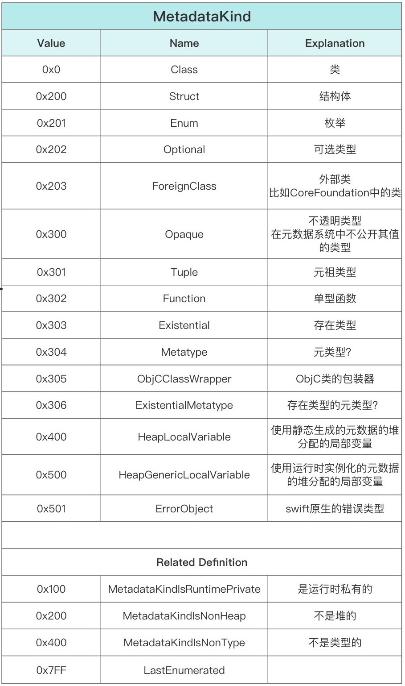
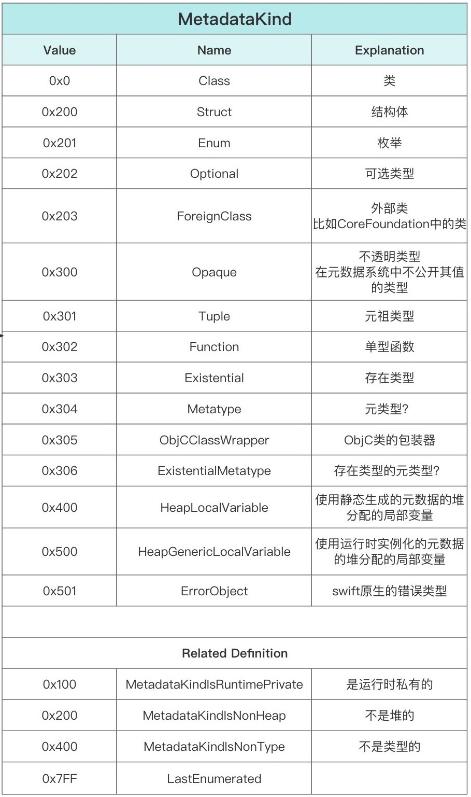

MetadataKind = Metadata的type
Swift中Metadata的Type == MetadataKind 的定义
图
- MetadataKind的定义 表格
- 
- == Swift的ValueMetadata和VWT的内存布局图中的
MetadataKind的表格
- == Swift的ValueMetadata和VWT的内存布局图中的
- 
核心代码
const unsigned MetadataKindIsNonType = 0x400;
const unsigned MetadataKindIsNonHeap = 0x200;
const unsigned MetadataKindIsRuntimePrivate = 0x100;
LastEnumerated = 0x7FF,
NOMINALTYPEMETADATAKIND(Class, 0)
NOMINALTYPEMETADATAKIND(Struct, 0 | MetadataKindIsNonHeap)
NOMINALTYPEMETADATAKIND(Enum, 1 | MetadataKindIsNonHeap)
NOMINALTYPEMETADATAKIND(Optional, 2 | MetadataKindIsNonHeap)
METADATAKIND(ForeignClass, 3 | MetadataKindIsNonHeap)
METADATAKIND(Opaque, 0 | MetadataKindIsRuntimePrivate | MetadataKindIsNonHeap)
METADATAKIND(Tuple, 1 | MetadataKindIsRuntimePrivate | MetadataKindIsNonHeap)
METADATAKIND(Function, 2 | MetadataKindIsRuntimePrivate | MetadataKindIsNonHeap)
METADATAKIND(Existential, 3 | MetadataKindIsRuntimePrivate | MetadataKindIsNonHeap)
METADATAKIND(Metatype, 4 | MetadataKindIsRuntimePrivate | MetadataKindIsNonHeap)
METADATAKIND(ObjCClassWrapper, 5 | MetadataKindIsRuntimePrivate | MetadataKindIsNonHeap)
METADATAKIND(ExistentialMetatype, 6 | MetadataKindIsRuntimePrivate | MetadataKindIsNonHeap)
METADATAKIND(HeapLocalVariable, 0 | MetadataKindIsNonType)
METADATAKIND(HeapGenericLocalVariable, 0 | MetadataKindIsNonType | MetadataKindIsRuntimePrivate)
METADATAKIND(ErrorObject, 1 | MetadataKindIsNonType | MetadataKindIsRuntimePrivate)
表格
| 名称 | 枚举值 | 说明 |
|---|---|---|
| Class | 0x0 | 类 |
| Struct | 0x200 | 结构体 |
| Enum | 0x201 | 枚举 |
| Optional | 0x202 | 可选类型 |
| ForeignClass | 0x203 | 外部类，比如CoreFoundation中的类 |
| Opaque | 0x300 | 在元数据系统中不公开其值的类型 |
| Tuple | 0x301 | 元祖类型 |
| Function | 0x302 | A monomorphic function |
| Existential | 0x303 | An existential type |
| Metatype | 0x304 | A metatype |
| ObjCClassWrapper | 0x305 | An ObjC class wrapper |
| ExistentialMetatype | 0x306 | An existential metatype |
| HeapLocalVariable | 0x400 | 使用静态生成的元数据的堆分配的局部变量 |
| HeapGenericLocalVariable | 0x500 | 使用运行时实例化的元数据的堆分配的局部变量 |
| ErrorObject | 0x501 | swift原生的错误类型 |
| LastEnumerated | 0x7FF | 最大的非isa指针元数据类型值 |
| 🔽 下面是通用全局定义 | ||
| MetadataKindIsNonType | 0x400 | |
| MetadataKindIsNonHeap | 0x200 | |
| MetadataKindIsNonHeap | 0x200 | |
| LastEnumerated | 0x7FF | |